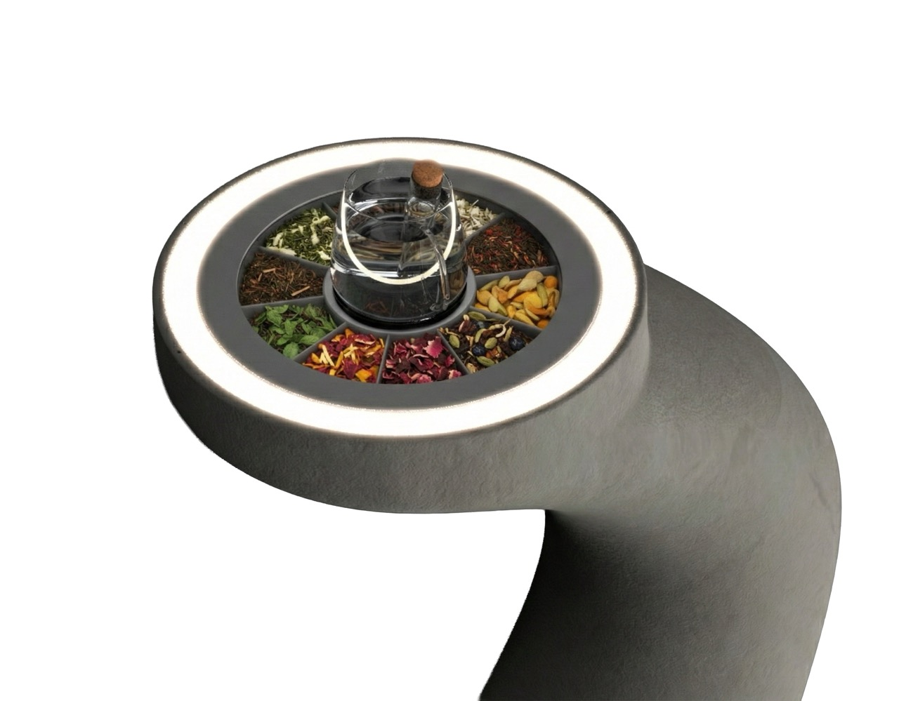
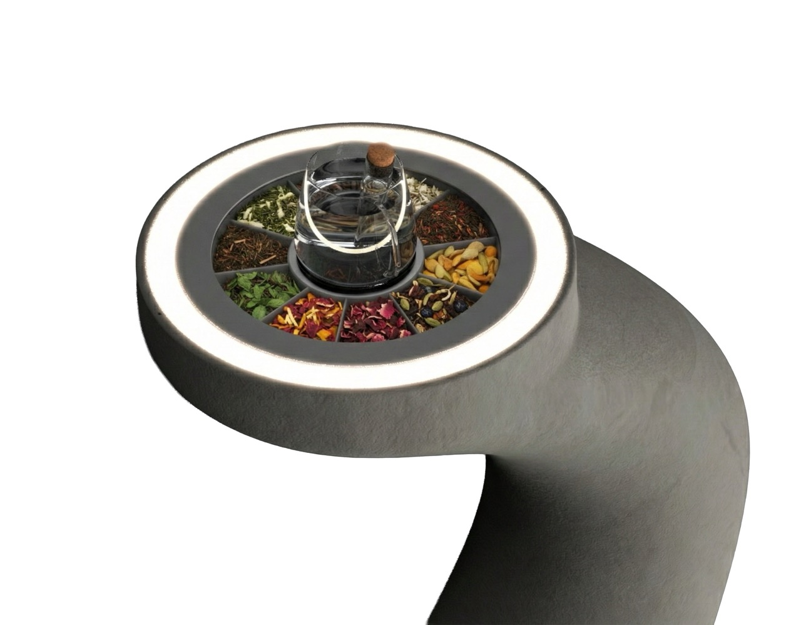
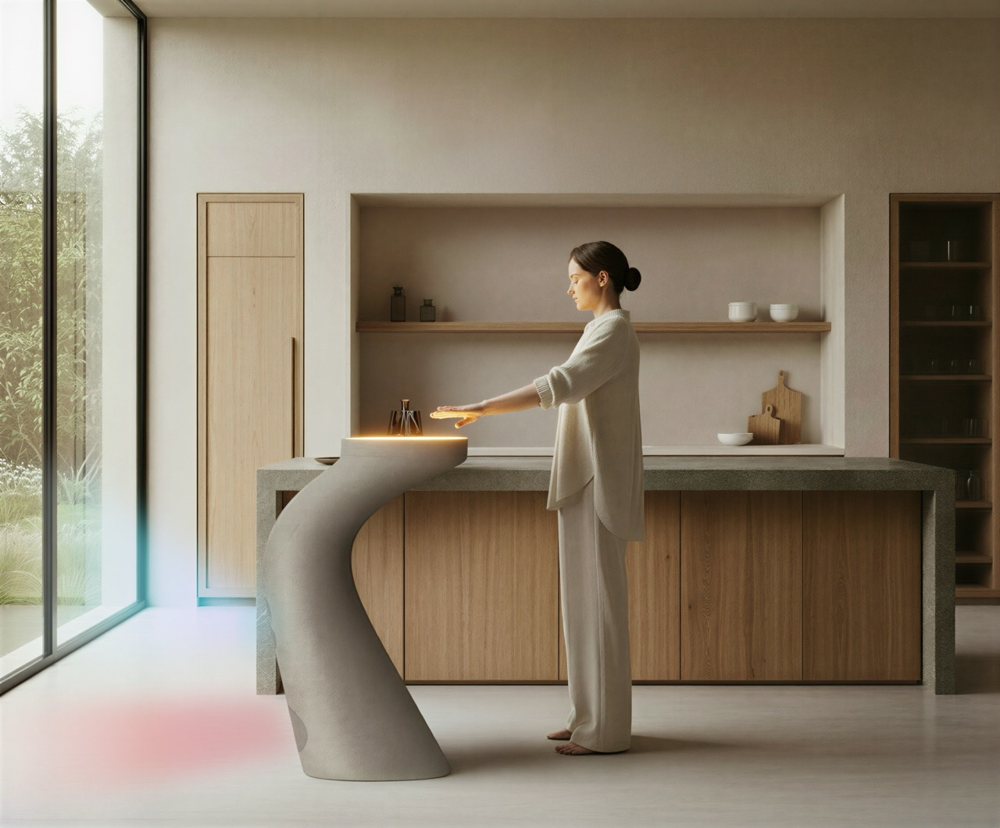
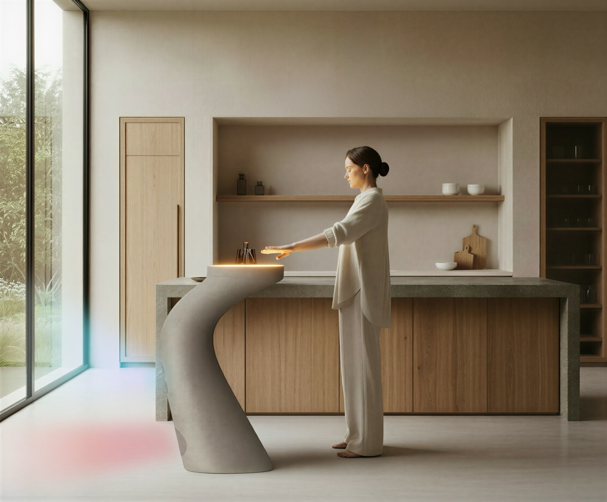
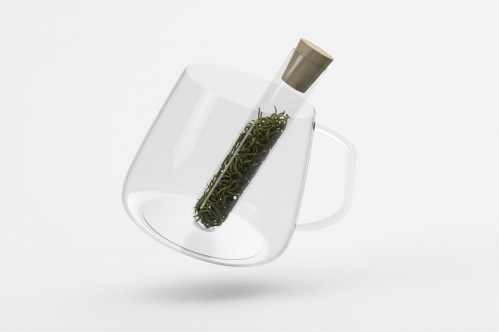
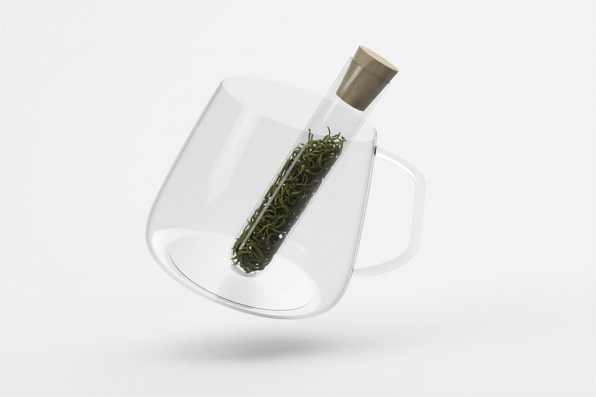

Obelisk
In so many of our lives, stillness is missing. The weekday morning is a rushed process: throwing on clothes, a quick cup of coffee or tea and out to start one’s day. Obelisk aims to bring back a careful moment of rest. Obelisk is more than a morning routine, it is an innovative use of robotics that brings together the ceremony of tea drinking with meditation.
Tea is inherently spiritual, both in substance and pratice. The beverage is consumed by an estimated 2 billion people everyday in countless ceremonies. As the revered Buddhist monk Popchong Sunim puts it, “Tea is a path to the universe.”
Obelisks too are paths to the universe; totems, spires and obelisks were built through millennia by disparate cultures, often with the intent of asking for or offering something. Egyptian, American Indian and Aztec culture, all constructed these objects to bring them closer with their deities.
Throughout the design process, I held the great minimalists in mind. The goal was to create a device that doesn’t demand attention, in size or form, that fits perfectly into the user’s space. Below are some of my design references.


 

 

 



Graph
You can also use online links for images if you don't want to host them yourself.